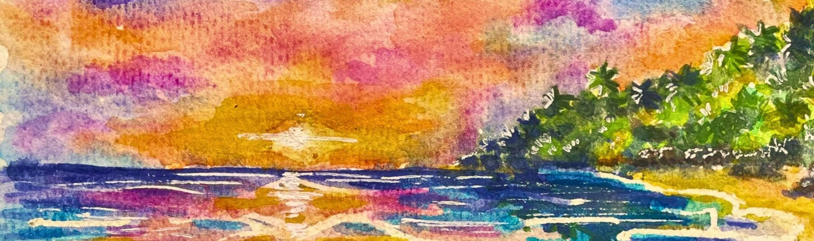
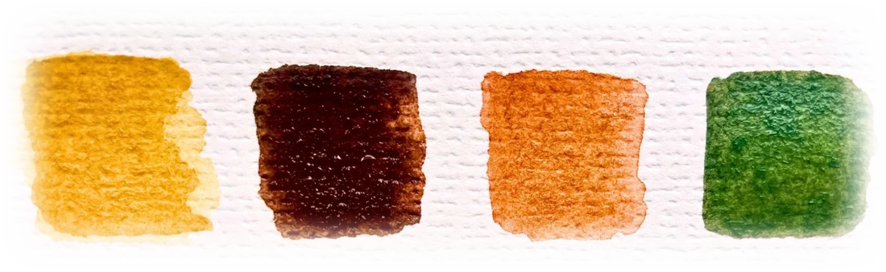
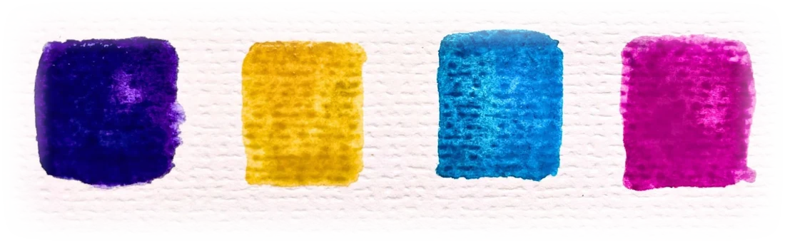
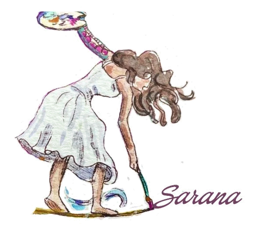

The Mermaid and the Boy
A picture book in progress
All images on this page were hand painted by me.

“On a quiet stretch of shoreline on the island of Siquijor, the tide behaves like a shy clock. Sometimes it is early, sometimes it is late, because time forgets the rules here. In this place, there lived a boy who measured everything, and a girl who read everything.”
A story that speaks in more than one voice
On the surface, this is a children's story about a mermaid, a boy and a magical island - the kind of quietly enchanted world children inhabit naturally. Underneath lives a lesson that doesn't announce itself as one (which to me, is the only kind worth writing about). Two kinds of intelligence learn to be present with each other without needing the other to change. This theme belongs to anyone who has ever loved someone who sees the world completely differently to themselves.
A world taking shape
There's an island in the Philippines called Siquijor. It has a reputation for magic and mysticism. The kind that lives in reflections, shadows and the sense of passing time. My story is rooted in this Siquijor atmosphere through words and a distinctive visual language: original watercolour illustrations painted to be rooted in Siquijor’s unique tropical light.


The making of the book
The manuscript is complete, and I have mapped the creative direction for the book across its individual spreads. A detailed visual concept is taking shape, with original watercolour illustrations underway. My intention is to create a considered and cohesive book in which words, images, atmosphere and physical form work together, each contributing to the experience of the whole.
I'm creating a hardback with the weight and feel of something that wants to be kept. The kind of book that lives between the art books and the children's books but belongs fully to both. The kind a parent reads with a child, and stays up thinking about after.
Planned format: ~40-page case-bound hardback, uncoated paper.
An invitation
I'm interested in connecting with independent publishers, editors, art directors, book designers, printers, bookbinders and creative collaborators who are drawn to thoughtful, illustrated storytelling.
I'm looking for a publishing relationship that can bring professional experience, care and imagination to the process, while respecting the book's original creative vision. If the project resonates with you, I'd welcome a conversation. Let's explore what this book could become!
Open and held
Open: editorial suggestions on the manuscript, conversation about sequence and pacing, professional book design recommendations, physical production guided by the quality I intend.
Held: conceptual and physical authorship, and the dual register.
Life imitates art
This year (2026) I lived on the island of Siquijor, Philippines and I have never felt more inspired to write anything in my whole life. There is a beach on the far East side of the island called “Monkey Beach”. I pictured this beach in my mind when I wrote the first draft of The Mermaid and the Boy. It was only afterwards that I visited the beach and got literal goosebumps as I stepped into the world I thought I had only imagined.
About the creator

According to Hamburg philosopher Johann von Wowern, I might be a polymath. I am a (semi) retired scientist who packed up a nice London life in 2024 in search of adventure.
Apparently, if you keep saying something with enough confidence, life occasionally decides to take it literally.
I spent a year on Australia’s East Coast and have been travelling/dancing/painting/writing about the world for the last two years in pursuit of a wilder version of myself.
Everywhere I go, I write stories and paint whimsical watercolours inspired by the world around me. Sometimes these depict real people and places, other times, a real-life spark has a baby with a fever dream or a shower thought.
“The Mermaid and the Boy” is one such love child.
Contact: bethanysarana4@gmail.com
Instagram: @bethsarana
Substack: https://substack.com/@bethanysarana
Currently based in Kuala Lumpur, happy to meet in person.